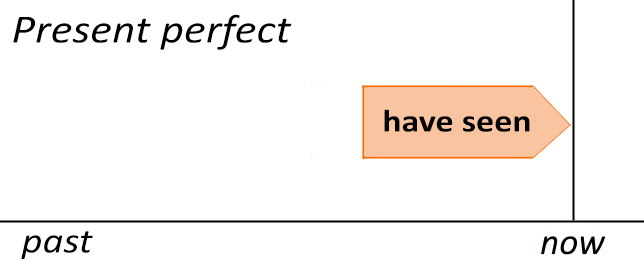
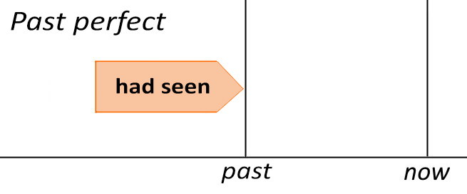

Past Perfect. Прошедшее совершённое время
Чтобы понять тему данного урока, возможно, вам стоит повторить тему Present Perfect. Времена perfect не самые простые для русского человека, но без них никуда.
Если время Present Perfect показывает результат на настоящий момент времени, то время Past Perfect, как вы можете догадаться, показывает результат на какой-то момент времени в прошлом, либо действие, завершённое перед другим действием в прошлом. Чаще всего перед нами будет какое-то событие в прошлом, описанное временем Past Simple, а рядом будет время Past Perfect, указывающее, что что-то совершилось до/раньше события, описанного временем Past Simple. Время Past Simple может и отсутствовать, тогда нужно догадываться из контекста.
Форма Past Perfect образуется так же, как и Present Perfect, только ‘have’ стоит в прошедшем времени – ‘had’ (потому что Past, всё логично).
Past Perfect = had (not) + причастие II
When we arrived, the movie had started. – Когда мы прибыли, фильм уже начался.
She had read the book before she saw the film. – Она прочитала книгу до того, как посмотрела фильм.
В первом примере фильм начался до того, как ‘мы прибыли’, поэтому в переводе добавлено слово ‘уже’, которое не указано в оригинале, но без которого потерялся бы смысл в переводе. В двух примерах специально добавлены два слова для ‘фильма’. Какое из них использовать? Любое. Movie /'muːvɪ/ чаще используется в разговорной речи и в американском английском. Film /fɪlm/ запомнить проще, соответствует нашему слову. Чаще используется в профессиональной сфере. Немного соответствует понятию ‘художественный фильм’, и поэтому не очень подходит для случаев, когда мы смотрим развлекательные голливудские блокбастеры. Также имеет значения: киноплёнка, фотоплёнка. А смотрим мы фильмы в: cinema /'sɪnəmə/ кинотеатр.
Если последовательность действий очевидна (особенно со словами ‘before’ и ‘after’), то использование Past Perfect не обязательно:
The movie (had) started before we arrived. – Фильм начался до того, как мы прибыли.
Момент в прошлом может быть обозначен просто предлогом ‘by’. Past Perfect здесь показывает действие, которое закончилось к этому моменту.
They had arrived home by 11 o’clock. – Они прибыли домой к 11 часам.
The meeting had been over by 7 o’clock. – Собрание закончилось к 7 часам.
Обратите внимание на то, как образовано существительное ‘meeting’ /'miːtɪŋ/ собрание; встреча (к известному вам глаголу ‘meet’ добавлено окончание -ing). Запомните также 4 навыка, которыми вам нужно обладать: reading чтение, writing письмо, listening аудирование, speaking речь. Не забыли про speaking? Уверен, что многие забыли. Ай ай ай...
Сравните Present perfect и Past perfect (’d – сокращенная форма для had):

- What is it? I’ve never seen it before.
Что это? Я никогда это раньше не видел. - We are hungry. We haven’t had lunch.
Мы голодные. Мы не обедали. - I’ve been to Germany twice [(by) now].
Я был в Германии дважды [(к) настоящему моменту времени]

- I didn’t know what it was. I’d never seen it before.
Я не знал, что это было. Я никогда это раньше не видел. - We were hungry. We hadn’t had lunch.
Мы были голодные. Мы не обедали. - I’d been to Germany twice by the time I was 19 years old.
Я был в Германии дважды к тому времени, когда мне исполнилось 19 лет.
Пара примеров с вопросами:
Had you cleaned your room by the time your parents came home? – Ты убрал (свою) комнату / прибрался в комнате к тому времени, как (твои) родители пришли домой?
What had she said that made him so angry? – Что она сказала, что его так рассердило? (досл.: сделало его таким сердитым)
Не забывайте, что ни с последовательными, ни с параллельными действиями Past Perfect не применяется:
A businessman came to me, asked me if I wanted to buy something and went away. – Бизнесмен пришёл ко мне, спросил не хотел ли я купить кое-что и ушёл. (странный чел какой-то)
I was walking along the street when a gentleman asked me if he could come along with me. – Я шла по улице, когда (какой-то) джентльмен спросил не может ли он составить мне компанию (досл.: не мог ли он пройтись со мной).
Businessman и gentleman не просто так добавлены, а чтобы вы обратили внимание, что слово ‘man’ может входить в состав сложных слов. Подобные слова часто обозначают профессию, занятие или национальность. Чуть реже встречаются сложные существительные с ‘woman’.
a policeman /pə'liːsmən/ – policemen /pə'liːsmən/ (полицейские)
a sportsman /'spɔːtsmən/ – sportsmen /'spɔːtsmən/ (спортсмены)
an Englishman /'ɪŋglɪʃmən/ – Englishmen /'ɪŋglɪʃmən/ (англичане)
an Englishwoman /'ɪŋglɪʃˌwumən/ – Englishwomen /'ɪŋglɪʃˌwɪmɪn/ (англичанки).
Разница в произношении есть только с woman /'wumən/ – women /'wɪmɪn/. В частях ‘man’ и ‘men’ диктор всё-таки сделал некоторое различие, произнеся ‘men’ как /men/, не всегда оно может быть. В остальном подсказками являются артикли.
Past Perfect может быть и в пассивной форме. Для этого после ‘had (not)’ ставят причастие II от глагола ‘to be’, т.е. been.
The window had been broken by the time they arrived. – Окно было разбито к тому времени, как они прибыли.
The room hadn’t been cleaned by 9 o’clock. – Комната не была убрана к 9 часам.
Had the room been cleaned by 10 o’clock? – Прибрались (ли) в комнате к 10 часам? (вместо комнаты может быть номер в гостинице)
Время Past Perfect в разговорной речи используется редко, вы всегда можете сформулировать предложение так, чтобы получилось Past Simple. Но вам всё равно нужно с ним познакомиться, хотя бы потому, что оно используется в 3-м типе условных предложений (следующий урок). А пока выучите новые неправильные глаголы:
| Инфинитив | Прошедшее | Причастие II | Перевод |
| give /gɪv/ |
gave /geɪv/ |
given /gɪv(ə)n/ |
давать |
| drive /draɪv/ |
drove /drəʊv/ |
driven /'drɪv(ə)n/ |
ездить |
| hide | hid | hidden | прятать |
| rewrite | rewrote | rewritten | переписывать |
| send | sent | sent | посылать |
Обратите внимание на префикс (приставку) ‘re-’, он показывает повторяемость действия, т.е. не один раз что-то было написано в данном случае, а больше одного раза. Переходим к диалогам.
R: — Remember me? Rameses. You should thank me, my friend.
N: — Right... ‘thanks.’
R: — No, really. The English lady paid me to get rid of1 you. But me? I’m a nice guy. I saved your life. Right now, I am the only friend you got.
N: — Uh-huh... And now you figure I owe you something, is that it?
R: — Smart guy. I like that. You are way ahead of me. It is really a simple question... where is it?
N: — I don’t know, buddy.
R: — Bullshit2.
N: — Look, even if I did know, my life wouldn’t be worth very much once I told you, now would it?
R: — You insult me.
N: — You’re a pirate.
R: — And a good businessman. Give me some respect. ...
N: — Look, you can torture me all you want.
R: — Okay.
N: — But I can’t tell you what I don’t know.
R: — Maybe so. We’ll see if your friend is more... cooperative.
N: — What? Who?
R: — Your friend – Victor Sullivan? I don’t want to do this... at his age, it may be too much for him.
N: — Wait...
R: — No, no, no. You have given me no choice. Perhaps your friend will be more grateful for his life.
N: — Wait. You leave Sully alone.
R: — Bye, Nathan.
N: — You don’t touch him!
G: — This is gonna be fun.
— You all right? Man, I had a hell of a time... What’s the matter3 with you?
— How do I know you’re real?
— Ow!
— That real enough for you? Don’t ever point a gun at me again.
— I... I saw them shoot you4... right after the eclipse.
— What? What eclipse? Look, kid, you went nuts5 right after you drank from that fountain. It’s the water. That’s what destroyed the city, not ‘the Wrath of God.’ ... Wait, it doesn’t make any sense – how do they think they’re getting the water out of here?
— No, it’s not the water, it’s what in the water. ... It wasn’t treasure they were after, it was power. Only once Drake realized what he’d been sent6 for, he abandoned the mission. He lied to the Queen, told her he didn’t find anything, and then hid all the traces of his voyage. Rewrote history.
— Well... who are we to argue with Sir Francis? Whaddya7 say we head down there and end this thing, once and for all8?
Notes:
- ‘to get rid of’: избавиться от (кого-либо/чего-либо).
- ‘bullshit’: ещё одно неприличное слово, аналогичное второй его части, без первой части ‘bull’ /bul/ бык. Дословно не переводится. Можно перевести как: бред, брешешь, врешь и др.
- ‘matter’: материя. Это дословное значение. Также означает: предмет, вопрос, факт, дело – эти значения и используются во фразе What’s the matter with you? Что с тобой такое? Что с тобой случилось? (досл.: что за дело с тобой?) Запомните фразу.
- ‘saw them shoot you’: увидел, как они стреляют в тебя. Конструкция немного напоминает конструкцию предыдущего урока.
- ‘went nuts’: сошёл с ума, спятил, свихнулся. Здесь ‘nuts’ не означает ‘орехи’, а означает: сумасшедший, чокнутый; рехнувшийся, спятивший. Интересно, производитель шоколадки ‘nuts’ учитывали это значение, когда придумывали название?..
- ‘he’d been sent’ = ‘he had been sent’. Тема урока.
- ‘whaddya’ = ‘what do you’.
- ‘once and for all’: раз и навсегда. Запомните фразу.
Бонусный диалог из официального трейлера Соника (2019) с Джимом Керри. Хотел его добавить в 8-ой урок, но он оказался перегруженным, поэтому только вот сейчас оказалось свободное место в уроках. Если для 8-го урока он был средней сложности, то для 34-го должен быть элементарным. А вы как считаете? Перевод не дословный:
Комментарии:
- ‘in charge (of)’ /ɪn 'ʧɑːʤ ɔv/: ответственный (за)
- Русские локализаторы не смогли озвучить быструю речь Джима Керри, поэтому просто вырезали кусок сцены после слова "главный". А мы эту речь не будем слушать потому, что она быстрая и сложная. Даже в таком виде диалог не медленный.
- ‘basic’ /'beɪsɪk/: базовый, основной. Здесь имеется в виду простой, поэтому получается: простак.
- ‘I don’t know if you realise...’. Дословно: Я не знаю, осознаёшь ли ты...
- ‘Nobody cares’. Дословно: Никого не волнует.
Словарь
allow /ə'laʊ/ позволять, разрешать
argue /'ɑːgjuː/ спорить
arrive /ə'raɪv/ прибывать, приезжать
basic /'beɪsɪk/ базовый, основной
businessman /'bɪznɪsmæn/ бизнесмен
choice /ʧɔɪs/ выбор
cinema /'sɪnəmə/ кинотеатр
clarify /'klærɪfaɪ/ прояснить; пролить свет (на что-л.)
cooperative /kəʊ'ɔpərətɪv/ отзывчивый, готовый помочь
destroy /dɪ'strɔɪ/ 1) разрушать; стирать с лица земли; 2) истреблять, уничтожать; лишать жизни
drive /draɪv/ ездить; ехать (на автомобиле); прош. вр. drove /drəʊv/; прич. II driven /'drɪv(ə)n/
eclipse /ɪ'klɪps, ə-, iː-/ затмение
Englishman /'ɪŋglɪʃmən/ англичанин
film /fɪlm/ 1) фильм; 2) киноплёнка
fountain /'faʊntɪn/ фонтан
gentleman /'ʤentlmən/ джентльмен (хорошо воспитанный и порядочный человек)
Germany /'ʤɜːmənɪ/ Германия
give /gɪv/ дать; прош. вр. gave /geɪv/; прич. II given /gɪv(ə)n/
gun /gʌn/ (огнестрельное) оружие; пистолет
in charge (of) /ʧɑːʤ/ ответственный (за)
insult /ɪn'sʌlt/ оскорблять; обижать
listening /'lɪs(ə)nɪŋ/ аудирование, слушание
major /'meɪʤə/ майор
matter /'mætə/ 1) вещество; материя; 2) предмет, вопрос, факт, дело
meeting /'miːtɪŋ/ 1) встреча; 2) собрание, митинг
movie /'muːvɪ/ кинофильм, кино, фильм
nut /nʌt/ орех; nuts /nʌts/ сумасшедший, чокнутый; рехнувшийся, спятивший
once /wʌns/ 1) один раз; однажды; 2) как только
point /pɔɪnt/ (point at, point to) 1) направлять, наводить (оружие); целиться, прицеливаться; 2) указывать на (что-л.)
policeman /pə'liːsmən/ полицейский (мужчина)
reading /'riːdɪŋ/ чтение
rewrite /ˌriː'raɪt/ переписывать; прош. вр. rewrote /ˌriː'rəʊt/; прич. II rewritten /ˌriː'rɪt(ə)n/
rid /rɪd/ (rid of) освобождать, избавлять (от чего-л. / кого-л.) to get rid of – отделаться/избавиться от кого-либо
sent /sent/ прош. вр. и прич. II от send
speaking /'spiːkɪŋ/ речь, говорение
sportsman /'spɔːtsmən/ спортсмен
trace /treɪs/ след
twice /twaɪs/ дважды
voyage /'vɔɪɪʤ/ морское путешествие
way ahead далеко впереди
wrath /ræθ, rɒθ/ гнев, ярость
writing /'raɪtɪŋ/ письмо
Упражнения
Упражнение 1. Переведите с английского на русский.
- We went to Germany last year. We had never been there before.
- When he finished school, he had been in Moscow for seven years.
- Had you gone there before we went together?
- We were late for the train because we had left our passports at home.
- The grass was yellow because it hadn’t rained the whole season.
- My car hadn’t been washed by eight o’clock.
- On the 3rd of December, I’d worked here for six months.
- He hadn’t used smartphones before, so I showed him how to use it.
- Had Nate met Elena before they worked together?
- What had you cooked for dinner that night?
- Kate had just got home when I phoned. She had been at her mother’s house.
- It was nice to see John again after such a long time. I hadn’t seen him for five years.
Упражнение 2. Объедините два простых предложения в одно сложное, используя Past Perfect. Переведите полученное предложение.
- I wrote my letter. Then my sister came back from her work.
- He finished his work. Then he went to visit his parents.
- My father abandoned our family. Then (later) I was born.
- I got the message. Then I went to speak about my voyage.
- She lived in Russia. Then she went to the USA.
- They ate that strange food. Then they began to feel bad.
Упражнение 3. Переведите с русского на английский, используя Past Perfect.
- Когда Мария прибыла на вечеринку, Джефф уже ушёл домой.
- Вы сделали свою домашнюю работу перед тем, как ваши родители пришли домой?
- Он не закончил свою работу к шести часам.
- Я поужинал, поэтому не был голоден.
- Катя не хотела идти в кинотеатр с нами, потому что она уже видела фильм.
- Елена и Хлоя не встречались до вечеринки.
- Когда она прибыла, они уже были готовы?
- Когда они закончили собрание, мы пошли гулять.
- Ты оплатил счёт перед тем, как мы ушли?
- Том играл в футбол вчера. Он раньше никогда не играл в футбол.
- Обед (ланч) был приготовлен (на плите) к 12 часам.
- Было холодно всю неделю, когда я прибыл?
Курс доступен в виде приложения на iOS и андроид (подробнее в уроке 1):